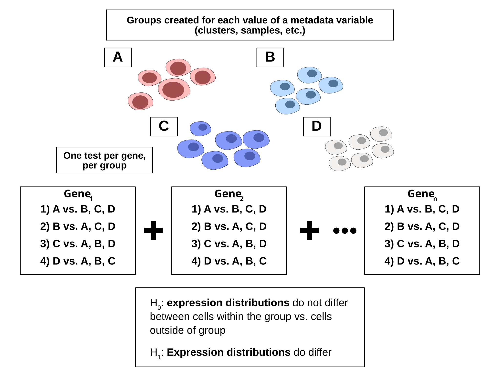
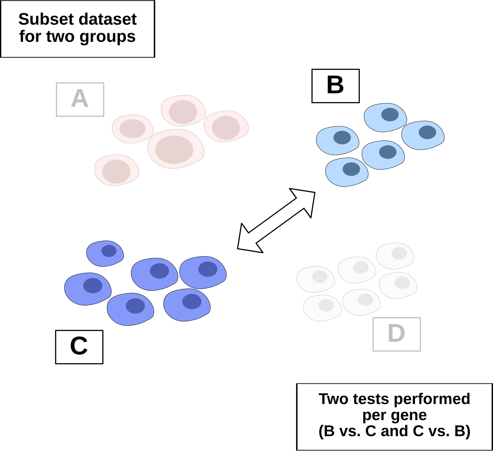

scDE Usage and Examples
DGE_Tutorial.RmdUnified Interface for DGE Functions
This package is a wrapper for several differential expression functions, which are executed based on the class of the single cell object passed. The computations performed by each function are not modified by this package, and slight differences in output are observed for each function.
Functions Applied
| Object Format | Package | Function |
|---|---|---|
| Seurat | presto | `presto::wilcoxauc` |
| Seurat v5 (with BPCells Count Matrix) | BPCells | `BPcells::marker_features` |
| Anndata | scanpy | `scanpy.tl.rank_genes_groups` |
| SingleCellExperiment (in-memory) | presto | `presto::wilcoxauc` |
| SingleCellExperiment (DelayedArray) | scran | `scran::pairwiseWilcox` |
| SingleCellExperiment (all, pairwise) | scran | `scran::findMarkers` |
This vignette will overview the process of differential gene
expression, and will demonstrate usage run_dge function to
perfrom common analyses.
DGE Overview
The general process of differential gene expression testing for single cell data is outlined in the diagram below. Groups of cells are identified based on a chosen metadata variable in the object. For each gene and group, expression distributions are compared for all cells within the group vs. cells outside of the group. All functions involve the use of the wilcoxon rank sum, a non-parametric test widely used on single cell data due to the extreme sparsity of datasets and non-normal expression distributions observed. For non-parametric tests, the null hypothesis is based on a comparison of the distributions between two groups, rather than the means. Therefore, a rejection of the null hypothesis for a gene within a group indicates a statistically significant difference in the expression distributions observed, rather than in the mean expression values.

Marker Identification
Marker identification is the process of identifying genes that distinguish a group from other cells in a dataset.
An example of marker identification is given here. The object used
for this example is a subset of an accute myeloid leukemia reference
dataset originally generated by Triana et al. (Nature Immunology, 2021).
The dataset is included with this package and can by loaded by running
AML_Seurat.
To perform marker identification, first identify the metadata variable used for defining groups. We will use the variable for cell type to start, which is “condensed_cell_type” in this object.
To preview the groups that will be created, you can print the unique values for condensed_cell_type in the object. The SCUBA package provides a shortcut for this operation.
SCUBA::unique_values(AML_Seurat, "condensed_cell_type")## [1] "Plasma cells" "Primitive"
## [3] "Dendritic cells" "Plasmacytoid dendritic cells"
## [5] "BM Monocytes" "NK Cells"
## [7] "CD8+ T Cells" "B Cells"
## [9] "CD4+ T Cells" "PBMC Monocytes"Next, simply call run_dge to perform differntial
expression testing. Set group_by to “condensed_cell_tpe” to use this
variable for grouping.
table <- scDE::run_dge(
AML_Seurat,
group_by = "condensed_cell_type"
)
table## # A tibble: 4,620 × 9
## group feature avgExpr log2FC auc pval pval_adj pct_in pct_out
## <chr> <chr> <dbl> <dbl> <dbl> <dbl> <dbl> <dbl> <dbl>
## 1 B Cells MS4A1 4.48 6.26 1 2.43e-36 1.12e-33 100 7.56
## 2 B Cells CXCR5 2.22 3.13 0.854 5.78e-31 1.33e-28 72 2.22
## 3 B Cells VPREB3 2.41 3.40 0.875 4.12e-30 6.34e-28 76 3.56
## 4 B Cells CD24 1.77 2.52 0.796 3.80e-26 4.39e-24 60 1.78
## 5 B Cells CD79A 4.86 6.24 0.993 3.27e-25 3.02e-23 100 18.7
## 6 B Cells CD79B 3.51 4.51 0.966 2.02e-22 1.33e-20 96 19.6
## 7 B Cells IGHD 2.91 4.02 0.850 1.97e-22 1.33e-20 72 6.67
## 8 B Cells CD19 2.34 3.11 0.839 1.35e-17 7.78e-16 72 10.7
## 9 B Cells CD37 4.96 2.83 0.980 3.65e-15 1.87e-13 100 93.3
## 10 B Cells IGHM 4.60 5.84 0.874 8.94e-15 4.13e-13 80 22.2
## # ℹ 4,610 more rowsEach row in the output table represents a test run on a gene-group combination. The output format is similar to the output of presto. The columns are as following:
- Group: the group for which the indididual test was performed.
- Feature: the gene for which the test was performed.
- AvgExpr: the average expression of the gene within the group
- LogFC/Log2FC: the log fold change between the expression of the gene in the group, vs. the expression of the gene outside of the group.
- AUC: area under the recieving operator curve for the gene. The AUC metric indicates the degree to which the gene can serve as a marker for the current group, by distinguishing it from all other cells.
- pval: the p-value computed from the wilcoxon rank sum.
- pval_adj: the adjusted p-value. For presto, this is a Benjamini-Hochberg correction.
- pct_in: The percent of cells within the group expressing the gene.
- pct_out: The percent of cells outside the group expressing the gene.
The table can be subsetted to view the best markers for each group.
dplyr is used below, but base R subsetting can also be
used.
table |>
dplyr::filter(group == "Plasma cells")## # A tibble: 462 × 9
## group feature avgExpr log2FC auc pval pval_adj pct_in pct_out
## <chr> <chr> <dbl> <dbl> <dbl> <dbl> <dbl> <dbl> <dbl>
## 1 Plasma cells MZB1 4.16 5.42 0.988 2.54e-27 1.17e-24 100 14.7
## 2 Plasma cells DERL3 2.61 3.32 0.905 1.85e-21 4.28e-19 92 12
## 3 Plasma cells JCHAIN 5.83 7.41 0.946 6.92e-21 1.06e-18 92 19.6
## 4 Plasma cells FKBP11 2.93 3.59 0.934 1.14e-19 1.31e-17 96 19.6
## 5 Plasma cells SEC11C 3.27 3.73 0.961 1.68e-17 1.55e-15 100 33.8
## 6 Plasma cells SSR4 1.36 1.73 0.784 1.73e-13 1.33e-11 64 10.2
## 7 Plasma cells ITM2C 3.21 3.41 0.876 5.00e-13 3.30e-11 100 28
## 8 Plasma cells CD79A 3.02 3.29 0.839 1.08e-12 6.23e-11 92 19.6
## 9 Plasma cells FTH1 3.32 -2.25 0.0684 1.49e-12 7.64e-11 96 100
## 10 Plasma cells HSP90B1 4.37 2.86 0.929 1.80e-12 8.31e-11 100 82.2
## # ℹ 452 more rowsSorting in descending order by log-fold change or by AUC will show the top markers.
## # A tibble: 462 × 9
## group feature avgExpr log2FC auc pval pval_adj pct_in pct_out
## <chr> <chr> <dbl> <dbl> <dbl> <dbl> <dbl> <dbl> <dbl>
## 1 Plasma cells MZB1 4.16 5.42 0.988 2.54e-27 1.17e-24 100 14.7
## 2 Plasma cells SEC11C 3.27 3.73 0.961 1.68e-17 1.55e-15 100 33.8
## 3 Plasma cells JCHAIN 5.83 7.41 0.946 6.92e-21 1.06e-18 92 19.6
## 4 Plasma cells FKBP11 2.93 3.59 0.934 1.14e-19 1.31e-17 96 19.6
## 5 Plasma cells HSP90B1 4.37 2.86 0.929 1.80e-12 8.31e-11 100 82.2
## 6 Plasma cells DERL3 2.61 3.32 0.905 1.85e-21 4.28e-19 92 12
## 7 Plasma cells XBP1 3.55 3.15 0.894 1.95e-11 8.21e-10 100 53.8
## 8 Plasma cells IGKC 7.00 7.87 0.883 2.79e-11 1.08e- 9 88 48
## 9 Plasma cells ITM2C 3.21 3.41 0.876 5.00e-13 3.30e-11 100 28
## 10 Plasma cells CD79A 3.02 3.29 0.839 1.08e-12 6.23e-11 92 19.6
## # ℹ 452 more rowsCommon Syntax Accross Object Formats
Marker identification can be performed on anndata objects using the exact same syntax. In the example below, marker identification is performed on the same reference object in an anndata format.
# Load reference object in anndata format
AML_h5ad()## AnnData object with n_obs × n_vars = 250 × 462
## obs: 'nCount_RNA', 'nFeature_RNA', 'nCount_AB', 'nFeature_AB', 'nCount_BOTH', 'nFeature_BOTH', 'BOTH_snn_res.0.9', 'seurat_clusters', 'Prediction_Ind', 'BOTH_snn_res.1', 'ClusterID', 'Batch', 'x', 'y', 'x_mean', 'y_mean', 'cor', 'ct', 'prop', 'meandist', 'cDC', 'B.cells', 'Myelocytes', 'Erythroid', 'Megakaryocte', 'Ident', 'RNA_snn_res.0.4', 'condensed_cell_type'
## var: 'vst.mean', 'vst.variance', 'vst.variance.expected', 'vst.variance.standardized'
## obsm: 'X_pca', 'X_umap', 'protein'
## layers: 'counts'
# Perform the same marker analysis as above
scDE::run_dge(
AML_h5ad(),
group_by = "condensed_cell_type"
)## # A tibble: 4,620 × 7
## group feature log2FC pval pval_adj pct_in pct_out
## <chr> <chr> <dbl> <dbl> <dbl> <dbl> <dbl>
## 1 B Cells MS4A1 9.14 2.41e-16 1.12e-13 1 0.0756
## 2 B Cells CD79A 7.50 6.03e-16 1.39e-13 1 0.187
## 3 B Cells CD37 2.90 3.63e-15 5.59e-13 1 0.933
## 4 B Cells CD79B 6.13 2.25e-14 2.60e-12 0.96 0.196
## 5 B Cells SRGN -4.70 1.55e-12 1.43e-10 0.36 0.96
## 6 B Cells GSTP1 -5.71 1.23e-11 9.46e-10 0.12 0.893
## 7 B Cells CD52 2.31 2.33e-11 1.54e- 9 1 0.92
## 8 B Cells FCMR 4.52 3.21e-11 1.85e- 9 0.92 0.364
## 9 B Cells CD74 2.78 8.86e-11 4.55e- 9 1 0.951
## 10 B Cells VPREB3 7.48 8.04e-10 3.47e- 8 0.76 0.0356
## # ℹ 4,610 more rowsThe output format is largely consistent, with the exception of the
AUC metric, which is not computed by Scanpy’s
rank_genes_groups. The average expression in the group is
also not computed by the function.
Differential Expression Between Two Groups
Oftentimes you will want to identify differentially expressed genes
between two groups of cells, instead of genes expressed in one group
vs. the rest of the cells. To do this, you will first subset the dataset
for the two groups of interest, and then call run_dge on
the subsetted object.
With two unique values present for the group_by metadata variable,
two tests will be performed per gene, for the first group vs. the second
group, and the second group vs. the first group. These tests will be
equivalent to one another, with the only difference being the log-fold
change, which will be inverted. Since these tests are redundant, it can
be hidden with positive_only = TRUE (see example below).
When this is set to TRUE, one test will appear per gene in
the dataset, with the group in which it is upregulated.
Test results for genes that aren’t expressed in either group will also
be removed when this is set to TRUE.

Using the example object, let’s say we want to determine genes that are differentially expressed between BM (bone marrow) monocytes and PBMC (peripheral blood) monocytes. To do this, we will subset the object for these two values, and then run differential expression.
# Subset based on the condensed_cell_type variable for two cell types
subsetted_object <-
subset(
AML_Seurat,
subset = condensed_cell_type %in% c("BM Monocytes", "PBMC Monocytes")
)
# Run DGE, using the subset and the same metadata variable
run_dge(
object = subsetted_object,
group_by = "condensed_cell_type",
# Show only groups where a gene is upregulated
positive_only = TRUE
)## # A tibble: 337 × 9
## group feature avgExpr log2FC auc pval pval_adj pct_in pct_out
## <chr> <chr> <dbl> <dbl> <dbl> <dbl> <dbl> <dbl> <dbl>
## 1 BM Monocytes HBB 1.87 2.70 0.96 1.31e-9 6.05e-7 92 0
## 2 BM Monocytes SRGN 5.01 0.990 0.958 2.87e-8 6.63e-6 100 100
## 3 BM Monocytes HERPUD1 2.75 2.27 0.926 2.12e-7 3.26e-5 100 56
## 4 BM Monocytes CXCR4 3.03 2.89 0.9 9.84e-7 1.14e-4 96 48
## 5 BM Monocytes DDIT4 1.42 2.05 0.82 2.95e-6 2.72e-4 64 0
## 6 BM Monocytes PTMA 4.20 1.43 0.872 6.75e-6 4.45e-4 100 100
## 7 BM Monocytes CD74 5.84 1.14 0.854 1.80e-5 1.04e-3 100 100
## 8 BM Monocytes KIR 3.25 1.65 0.837 4.57e-5 1.94e-3 100 80
## 9 BM Monocytes CTSS 4.03 1.01 0.837 4.61e-5 1.94e-3 100 96
## 10 BM Monocytes AIF1 4.21 1.05 0.829 6.96e-5 2.68e-3 100 100
## # ℹ 327 more rows